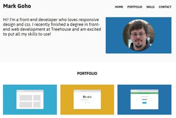
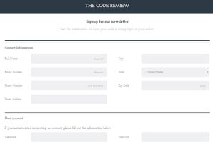
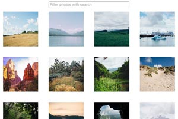
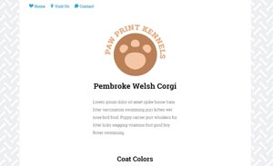
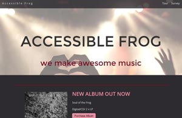
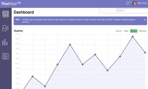
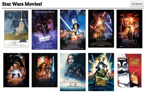
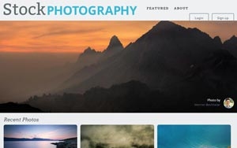

Doula Cooperative
A website re-make for a local organization here in Rochester. The website was hosted with SquareSpace but wanted to move it elsewhere. It required the entire site to be recreated and launched with new hosting.

Responsive Layout
Designing web pages that look and function well on multiple screen sizes is an essential skill for a web developer. Using HTML, CSS, and responsive design, you'll create a mobile-first web page with a layout that adjusts to fit mobile phones, tablets and desktop displays.

Online Registration Form
Web forms appear everywhere online: forms allow users to order books, sign up for web sites, and post to Facebook. This project challenges you to build a responsive, mobile-first registration form using a variety of HTML form elements.

Interactive Photo Gallery
Interactive image galleries are a common feature of many websites, from photo sites to e-commerce applications. Use HTML, CSS and the popular programming language JavaScript to create an interactive, searchable gallery of photos.
CSS to Sass
Sass is an important tool in a modern Front End Web Developer’s toolbox. It's used by many developers to make styling web pages with CSS easier and faster. Use programming principles to refactor a standard CSS stylesheet to Sass by identifying repeating patterns, using variables, and adding mixins.

SVG Site Update
Master Scaleable Vector Graphics. SVG graphics are quickly becoming one of the most widely used graphic formats on the Web. Modernize the user interface of a web page by adding, styling and optimizing SVG graphics.
Interactive Video Player
Build an HTML5 video player using JavaScript and the HTML5 Video API. Video, and the interface used to control the video, is increasingly important for all many different kinds of web applications including web site landing pages, blogs, podcasts, product marketing and training.

Accessibility Refactor
Accessible web sites allow anyone and everyone to use the web, regardless of physical or hardware differences. They also, generally, make sites faster to download and improve a site's search engine friendliness. Modify a website to make it more accessible for users and search engines.

Web App Dashboard
Build an interactive dashboard for a web application using advanced web techniques including SVG graphics and JavaScript programming. The project involves creating tables, charts, graphics and other user interface components in a manner that promotes interactivity and usability.

Public API Gallery
Many sites — Twitter, Facebook, IMDB, and Wikipedia to name a few — offer a vast sea of data that you can access and display on your own web pages. Using JavaScript programming create a gallery of information and images by communicating with a third-party API (Application Programming Interface).

Optimizing a Site for Performance
Web site performance is often a live-or-die metric for web sites and apps. Sites and apps that load, or appear to load, quickly are usually seen as being better built and more useful. You'll optimize a web site to improve its speed and performance.